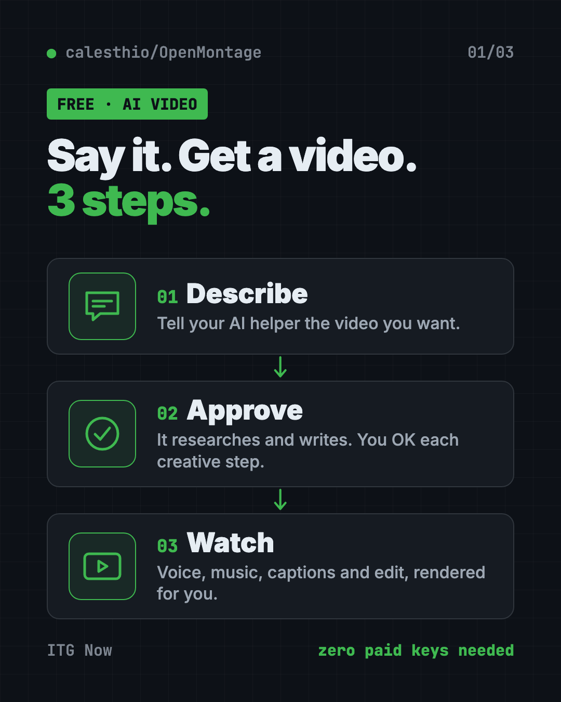
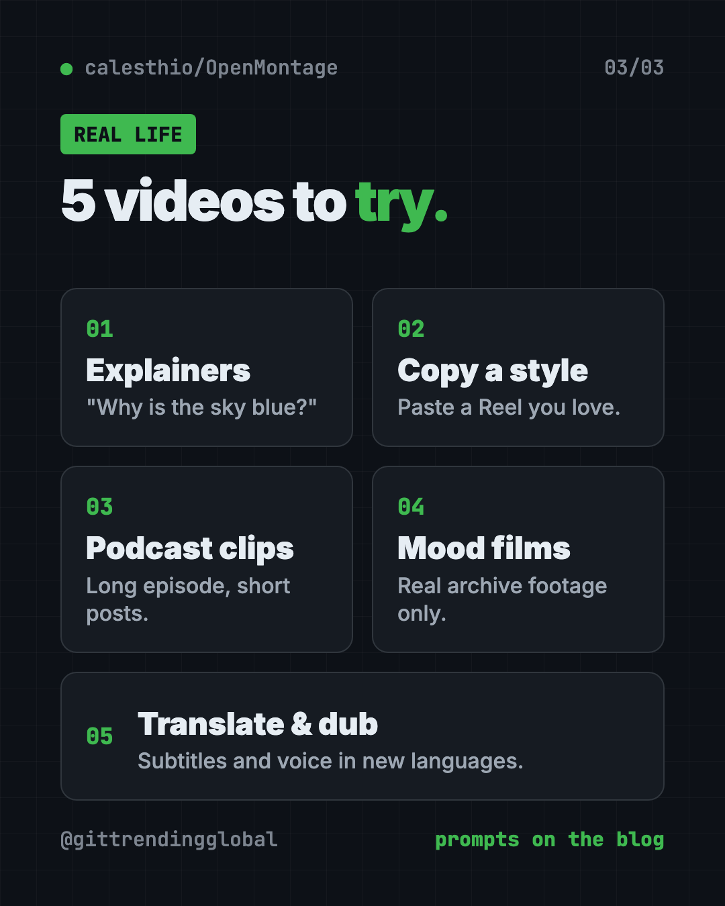
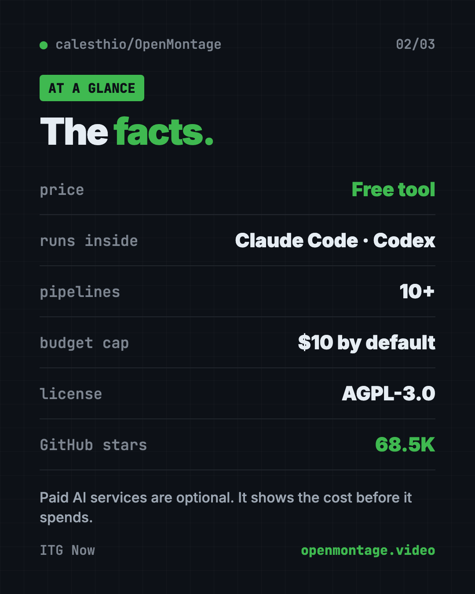

OpenMontage: Free AI Video Maker for Your AI Helper (2026)
- Published 15 Oct 2026
- Updated 16 Oct 2026
- 8 min read
- License AGPL-3.0
- By the ITG Now team
OpenMontage is a free AI video maker that turns your AI coding helper into a whole video team. You describe the video in plain words, and the AI researches, writes the script, adds a voice, music and captions, then renders the finished file.
Making one good video takes many jobs: research, script, voice, visuals, music, captions, editing. For a small creator or a busy teacher, that can eat days. This guide shows what OpenMontage does, what it costs, and how to set it up, including a prompt that lets an AI helper do the setup for you.
Key takeaways
- Free and open source. The code is under the AGPL-3.0 license.
- Works through your AI helper. Claude Code, Cursor, Copilot, Windsurf or Codex runs the whole thing.
- Real videos with zero paid keys. Free voice, free stock and archive footage, captions and editing come built in.
- Paid extras are optional. Add AI image or video services if you want. The README's sample prompts list about $0.15 to $3 per video.
- Budget guard. It estimates costs first and has a default spending cap of $10.
What is OpenMontage?
The README says it will "turn your AI coding assistant into a full video production studio."
An AI coding assistant is a chat helper, like Claude Code, that can read files and run programs on your computer. OpenMontage gives it a set of recipes and tools for every step of making a video.
Every video follows the same path:
research -> proposal -> script -> scene_plan -> assets -> edit -> compose
At each creative step, the AI stops and asks for your OK. You stay the director.
It also has a live board called Backlot. It shows each stage, the script, the scenes and the money spent, as the video is made.
On GitHub it has about 68.5K stars. Stars are like bookmarks, so a lot of people are trying it.

How to use OpenMontage (real examples)
These ideas come straight from the README's own sample prompts.
- Explain a topic to your class. "Make a 45-second animated explainer about why the sky is blue." No paid keys needed.
- Copy a style you love. Paste a YouTube Short or Reel and say "make me something like this, but about my topic." It studies the pacing and hook, then gives you two or three fresh ideas.
- Turn a long podcast into short clips. The Clip Factory and Podcast Repurpose pipelines cut long content into social-sized pieces.
- Make a mood film from real footage. Ask for "a documentary montage ... use real footage only." It pulls free clips from places like Archive.org, NASA and Wikimedia Commons.
- Translate your video. The Localization and Dub pipeline adds subtitles, translation and dubbing.
A pipeline is just a ready-made recipe for one kind of video. The README lists more, like screen demos, talking-head videos and cinematic trailers.
💡 Tip: Start with a short, zero-key prompt like the "sky is blue" one. You'll learn how the approval steps work before spending any money.

Is OpenMontage free?
The tool is free. What you pay for depends on the extras you add.
With zero paid keys, the README says setup gives you:
- Narration from Piper, a free offline voice.
- Footage from Archive.org, NASA and Wikimedia Commons.
- Extra stock from Pexels, Unsplash and Pixabay. Their developer keys are free.
- Editing and captions with free tools like Remotion and FFmpeg.
With paid AI services, you can add AI images, AI video clips, premium voices and music. The README's sample prompts list about $0.15 to $1.50 with one image or video service, and about $1 to $3 with a full setup.
⚠️ Heads up: Your AI coding helper itself may cost money too. That's separate from OpenMontage.
How does OpenMontage keep costs down?
This is one of its best parts. The README lists "budget governance" features:
- Estimate first. It tells you the cost before it spends.
- Ask above a limit. It pauses for your OK on any single step over $0.50 by default.
- Total cap. The default total budget cap is $10, and you can change it.
The README puts it simply: "No surprise bills."
OpenMontage at a glance
| Price | Free tool; optional paid AI services |
| Works offline | Partly. Free voice runs offline; research and stock footage need internet |
| Platforms | Mac, Windows, Linux |
| License | AGPL-3.0 (open source) |
| You need | Python 3.10+, FFmpeg, Node.js 18+, an AI coding assistant |
| Pipelines | 10+ ready-made video recipes |
| Best for | Creators, teachers and marketers who want videos without a team |

How to install OpenMontage
First you need four things:
- Python 3.10 or newer from python.org.
- FFmpeg, a free video tool. On a Mac with Homebrew, run
brew install ffmpeg. - Node.js 18 or newer from nodejs.org.
- An AI coding assistant: Claude Code, Cursor, Copilot, Windsurf or Codex.
Then open Terminal (Mac or Linux) or PowerShell (Windows). Copy and paste this:
git clone https://github.com/calesthio/OpenMontage.git
cd OpenMontage
make setup
Now open the OpenMontage folder in your AI coding assistant. Tell it what you want, like this:
Make a 60-second animated explainer about how neural networks learn
Want to see it work before writing your own prompt? The README says make demo renders sample videos with no keys at all.
⚠️ Heads up: No
makeon your computer? The README gives a longer one-line setup for Mac, Linux and Windows PowerShell. Your AI helper can run it for you.
Add keys later (optional)
Every key is optional. You add them to a file called .env in the folder. More keys means more tools, like AI video clips or premium voices. Start with none.
Let Claude or Codex set it up for you
Claude Code and OpenAI Codex are AI helpers that can run setup steps on your computer. You paste a request, it does the work, and you approve each step. With OpenMontage, the same helper then makes your videos.
Copy and paste this:
Please help me set up OpenMontage from github.com/calesthio/OpenMontage.
1. Check that I have Python 3.10+, FFmpeg and Node.js 18+. Help me install anything missing.
2. Clone the repo and run "make setup". If "make" is missing, use the README's no-make steps.
3. Explain each step before you run it.
4. Run "make demo" so I can see a sample video with no paid keys.
5. Tell me where the finished video file is saved.
Then try asking:
Make a 45-second animated explainer about why the sky is blue, with narration and captions. Use free tools only.
Make a 60-second documentary montage about city life in the rain. Use real footage only, no narration, with music.
Before we start, show me the cost estimate and set my total budget cap to $2.
What are OpenMontage's limits?
- Setup takes some steps. You install Python, FFmpeg and Node.js first.
- You need an AI coding helper. OpenMontage runs inside one. It is not a website you click through.
- The best visuals cost money. Free mode leans on stock, archive footage and still images. AI-generated video clips need paid services or a strong graphics card.
- The AGPL license has rules. You can use it freely. If you change it and share it, or run a changed copy as an online service, you must share your code too.
💡 Tip: Have a strong graphics card? The README says
make install-gpulets you make AI video clips on your own computer for free.
Our take
OpenMontage is one of the most complete free AI video makers we've seen. It treats your AI helper like a production team, with approvals at every creative step and a cost guard built in.
What we like:
- Real videos with zero paid keys.
- Asks for your OK at each creative step.
- Cost estimates and a spending cap by default.
- Lots of recipes: explainers, montages, podcast clips, dubbing.
- Can start from a video you already like.
What to watch for:
- Setup is for people comfortable with Terminal, or with an AI helper.
- Top visual quality costs extra.
- The AGPL license matters if you build a product on it.
Rather edit by hand? Try OpenReel, a free browser video editor, or OpenCut, the free CapCut alternative. Need a launch video for a project? See Brag. OpenMontage also made our June 22 weekly trending list.
FAQ
Is OpenMontage a free AI video maker?
Yes. The tool is free and open source. With zero paid keys it can still make narrated videos from free footage. Paid AI services are optional extras.
Do I need to know how to code to use OpenMontage?
Not really, but you need an AI coding assistant like Claude Code or Codex. You talk to it in plain words, and it runs the tools for you.
How much does an OpenMontage video cost?
It can cost nothing with free tools. The README's sample prompts list about $0.15 to $1.50 with one paid image or video service, and $1 to $3 with a full setup.
Which AI helpers work with OpenMontage?
The README lists Claude Code, Cursor, Copilot, Windsurf and Codex. Any AI coding assistant that can read files and run code should work.
Can OpenMontage use real video footage?
Yes. Its documentary montage path pulls real clips from free sources like Archive.org, NASA and Wikimedia Commons, then edits them together.
Will OpenMontage surprise me with a big bill?
It is built to avoid that. It estimates costs first, asks before any step over $0.50, and has a default total cap of $10.
Get OpenMontage: github.com/calesthio/OpenMontage
Keep reading

PureMac: Free CleanMyMac Alternative, No Subscription
PureMac is a free CleanMyMac alternative. It clears junk, fully uninstalls apps and finds duplicates, with no subscription, no tracking and no scare tactics.

Recordly: Free Screen Recorder With Auto-Zoom
Recordly is a free screen recorder and editor for Mac, Windows and Linux. It adds auto-zooms, a smooth cursor, webcam bubbles and styled backgrounds.

OpenSEO: Free Semrush Alternative, Open Source
OpenSEO is a free Semrush alternative for keyword research, rank tracking and site audits. It's open source, and you pay only for the search data you use.